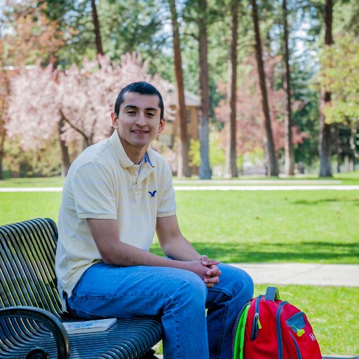

I am Jose Oronia
I am excited to build and make an impact on tools that connect people to the world through technology.
I am Jose Oronia
I am an aspiring Software Engineer excited to build and make an impact on tools that connect people to the world through technology.

I am passionate about Computer Science. I enjoy buiding products. I love giving back to the community. During my spare time I like to learn more about different frameworks and looking up free open source tools. I am always looking for ways to increase my skills by learning with resources. I've also been featured and interviewed by the Microsoft Blog and by the Washington State Opportunity Scholarship.